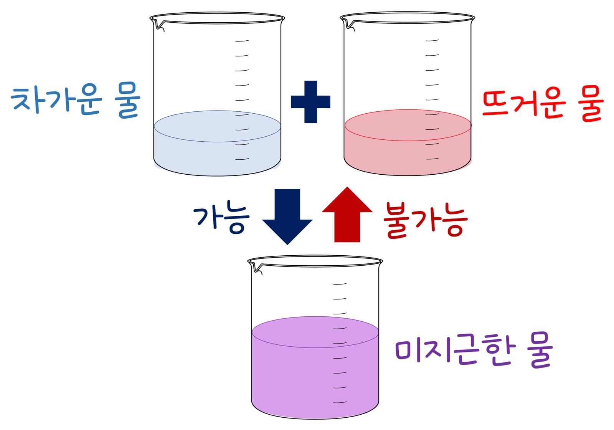

대학 열통계물리 · 웹툰 5화 「섞어서 미지근해진 물의 엔트로피는 그대로인가」
뜨거운 물 1 kg과 차가운 물 1 kg을 단열 용기에서 섞거나, 차가운 물을 뜨거운 열원에 바로 대며 각자의 ΔS = mc ln(T_f/T_i)와 합을 기록했습니다. 80 °C + 20 °C 혼합은 −371.6 + 407.9 = +36.2 J/K, 20 °C 물을 100 °C 열원에 대면 +112.6 J/K였고, 평균 온도를 두고 온도 차만 줄이면 ΔS가 온도 차의 제곱으로 작아졌습니다. dS = δQ_rev/T와 클라우지우스 부등식, 가역 경로를 세워 계산하는 요령을 정리합니다.
실험 데이터 되짚기
실험 안내: 자유 탐구 탭에서 과정(단열 용기에서 섞기(각 1 kg) · 차가운 물을 뜨거운 열원에 대기), 뜨거운 물(열원) 온도(30~100 °C), 차가운 물 온도(0~50 °C)를 고르고 섞기를 누르면 끝 온도, 옮겨 간 열, 각 물(열원)의 ΔS와 전체 ΔS가 기록표에 자동으로 쌓입니다(뜨거운 쪽이 더 높아야 실행됩니다). 평균 온도는 50 °C 근처로 두고 온도 차만 여러 가지(예: 80→20, 65→35, 55→45 °C)로 바꿔 기록이 4개 이상이 되면 데이터 검증 탭에서 전체 ΔS가 (ΔT/T̄)²에 비례하는지(기울기 ≈ mc/4) 확인할 수 있습니다. 모형: 물의 비열 c = 4186 J/(kg·K) 일정, 온도는 켈빈(+273.15)으로 계산합니다.
| 과정 | 뜨거움 °C | 차가움 °C | ΔS 뜨거움 | ΔS 차가움 | ΔS 합 (J/K) |
|---|---|---|---|---|---|
| 혼합 | 80 | 20 | −371.6 | +407.9 | +36.2 |
| 혼합 | 65 | 35 | −189.9 | +199.0 | +9.0 |
| 혼합 | 55 | 45 | −64.3 | +65.3 | +1.0 |
| 혼합 | 100 | 0 | −602.2 | +703.6 | +101.4 |
| 열원 | 80 | 20 | −711.2 | +779.5 | +68.3 |
| 열원 | 100 | 20 | −897.4 | +1010.1 | +112.6 |
잃은 열과 얻은 열은 같아도 같은 Q라도 낮은 온도에서 Q/T가 더 크므로 차가운 물의 증가분이 뜨거운 물의 감소분보다 커서 합은 언제나 양수입니다. 평균 50 °C에서 온도 차를 60 → 30 → 10 °C로 줄이자 ΔS는 36.2 → 9.0 → 1.0 J/K로, 온도 차 절반에 약 1/4이 되었습니다(≈ (mc/4)(ΔT/T̄)²). 같은 80 °C → 20 °C라도 열원에 바로 대면 68.3 J/K로 혼합보다 큽니다. 온도 차가 작고 느릴수록 가역에 가깝습니다.
카르노 순환의 Q_h/T_h = Q꜀/T꜀에서 출발하면 ∮δQ_rev/T = 0, 즉 dS = δQ_rev / T는 상태함수의 미분입니다. 비가역 과정이 끼면 클라우지우스 부등식에 따라 고립계에서 ΔS ≥ 0.
혼합 자체는 비가역이지만, 같은 처음·끝 상태를 잇는 가역 경로(온도가 조금씩 다른 열원에 천천히 닿기)를 세우면
ΔS = ∫ mc dT / T = mc ln(T_f / T_i)
교재 그림
섞는 것은 되고, 되돌리는 것은 안 된다

뜨거운 물과 차가운 물을 섞으면 미지근해지지만, 미지근한 물이 저절로 뜨거운 쪽과 차가운 쪽으로 갈라지지는 않습니다. 섞을 때 전체 엔트로피가 늘기 때문이에요(80 °C + 20 °C → 50 °C에서 +36.2 J/K).
움직여 보기
뜨거운 물 + 차가운 물 — 엔트로피 장부가 플러스로 남는 까닭
같은 열이 오가지만 차가운 물은 T가 작아 Q/T를 더 많이 얻습니다. 온도 차를 줄여(예: 55 °C + 45 °C) 합이 얼마나 작아지는지, ‘열원에 대기’로 바꾸면 합이 얼마나 커지는지 비교해 보세요. (물 각 1 kg, c = 4186 J/(kg·K), 열원은 온도가 변하지 않음)
· 섞이는 '도중'에는 위치마다 온도가 달라 S 하나로 쓰기 어렵습니다. 처음과 끝 평형 상태만 비교해요.
· "엔트로피 = 무질서"는 위험한 비유입니다. 단위 J/K가 말하듯 에너지와 온도의 장부예요.
“80 °C 물 1 kg이랑 20 °C 물 1 kg을 섞었더니 50 °C! 뜨거운 물이 잃은 열 = 차가운 물이 얻은 열. 에너지 보존 완벽. 그러니까 아무것도 안 변했어. 엔트로피도 0!”
웹툰 5화 #1 · 뭉치가 두 컵을 합친다
“엔트로피의 단위가 J/K라는 걸 기억해라. 이건 그림의 어지러움이 아니라 에너지와 온도의 장부다.”
웹툰 5화 #5 · ‘무질서’ 비유의 한계
녹는 동안 온도가 일정하므로 ΔS_얼음 = mL/T = 3.34×10⁵/273.15 ≈ +1222.8 J/K. 방(293.15 K, 거대한 열원)은 같은 열을 내주므로 ΔS_방 = −3.34×10⁵/293.15 ≈ −1139.3 J/K. 합 ≈ +83.4 J/K > 0. 방이 정확히 0 °C일 때만 합이 0, 곧 가역이다. 얼음 약 +1223 J/K, 전체 약 +83 J/K
바깥이 진공이라 W = 0, 단열이라 Q = 0, 따라서 ΔU = 0이고 이상기체 온도는 그대로다. S는 상태함수이므로 같은 처음·끝 상태를 잇는 등온 가역 팽창을 세우면 Q_rev = nRT ln 2, ΔS = nR ln 2 = 8.314 × 0.6931 ≈ +5.76 J/K. 실제 경로의 ∫δQ/T = 0 < ΔS로 클라우지우스 부등식 그대로다. Q = W = 0, ΔS ≈ +5.76 J/K